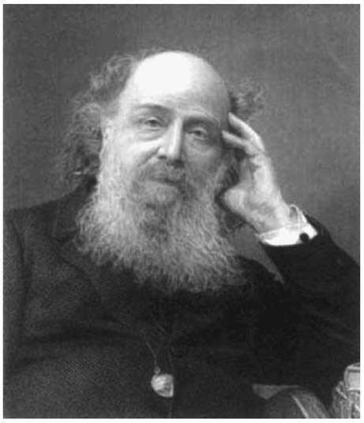
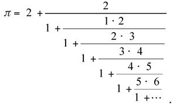

James Joseph Sylvester: English (1814–1897)
The British mathematician James Joseph Sylvester was born in London on September 3, 1814, and is known for having made significant contributions to combinatorics, matrix theory, number theory, and other branches of mathematics—while living in both the United States and England.1 Curiously, the mathematician known as James Joseph Sylvester was not born by that name; because his father’s name was Abraham Joseph, he was born as James Joseph. At the time that James’s older brother came to the United States, it was required that all immigrants have a middle name as well as a surname. The older brother adopted Sylvester as his new surname, and the younger brother, James Joseph, did the same. At the early age of fourteen, he studied at the University of London with the famous English mathematician Augustus De Morgan (1806–1871). His family withdrew him from the university after he had a skirmish with another student. He then entered the Liverpool Royal Institution. His more serious study of mathematics continued in 1831 at St. John’s College, Cambridge University. After several years of illness, he finally sat for the famous Cambridge mathematics examination, the Mathematical Tripos; he scored very high, coming in second in the competition. He was qualified to receive his university degree but did not receive it. Because doing so would conflict with his Jewish faith, he had refused to accept the Thirty-Nine Articles of the Church of England, which resulted in him being denied his degree. Furthermore, this also prevented him from obtaining the Smith’s Prize or a subsequent fellowship.
Nevertheless, he became a professor of natural philosophy at the University College London in 1838, and the following year became a fellow of the Royal Society of London. In 1841, he was finally awarded a bachelor of arts degree and a master of arts degree from Trinity College in Dublin, Ireland. Shortly thereafter, he moved to the United States and became professor of mathematics at the University of Virginia. After four months, once again, a violent encounter with two students caused him to leave. Subsequently, he moved to New York City, where he was denied an appointment as professor of mathematics at Columbia University because of his Jewish religion. As a result, in November 1843 he left New York City for England.

Figure 33.1. James Joseph Sylvester, sometime after his 1884 arrival in Oxford.
Once back in England, he took on a leadership position at the Equity and Law Life Assurance Society, where he used his mathematical talents to develop actuarial models. However, this position required a law degree, so, subsequently, he studied for the bar examination. At this time, he met Arthur Cayley (1821–1895), another mathematician who was also studying law. He collaborated with Cayley for many years, where together they made significant contributions to matrix theory and invariant theory. It was not until 1855 that Sylvester was once again appointed professor of mathematics, this time at the Royal Military Academy in Woolwich, in southeast London. He stayed there until 1869, when he was forced to retire at age fifty-five. He had to battle to receive a full pension, which he eventually achieved. It was not until 1872 that Cambridge University finally awarded Sylvester’s long overdue bachelor’s and master’s degrees, overcoming his initial blockage on account of being Jewish.
In 1876, he returned to the United States at the invitation of the new Johns Hopkins University in Baltimore, Maryland, where he became one of its first professors of mathematics. While there, in 1878, he founded the American Journal of Mathematics, which at that point was only the second such professional publication available in the United States. He returned to England in 1883 to accept the Savilian Professor of Geometry position at Oxford University. Here, too, he was not very popular with students; Sylvester tended to lecture primarily on his own research and was not too concerned about spreading other mathematical knowledge to his students. In time, his capacities weakened, including memory loss and poor eyesight; in 1892, although he retained his position at Oxford, he returned to London and spent his last years at the Athenaeum club, until his death on March 15, 1897.
James Joseph Sylvester is remembered for a number of mathematical developments, as well as the terms he introduced to our mathematics language, such as matrix, discriminant, and graph in the field of combinatorics. In fact, “he once laid claim to the appellation ‘Mathematical Adam,’ asserting that he believed he had ‘given more names (passed into general circulation) to the creatures of the mathematical reason than all the other mathematicians of the age combined.’”2 He also came up with an interesting way of developing the value of π:

Sylvester had a deep knowledge of classical literature, and he peppered his mathematical papers with Latin and Greek quotations. If we were to categorize Sylvester, we would probably say that he was largely an algebraist. He did some outstanding work in number theory, where, for example, he showed the number of possible ways a number can be expressed as a sum of positive integers. He worked with Diophantine equations, which are algebraic equations that require integer solutions. He also liked related problems, such as “I have a large number of stamps to the value of only 5d and 17d. What is the largest denomination, which I cannot make up with the combination of these two different values?” (The correct answer is 63d.)
Not only did he enjoy presenting puzzles to a general audience as well as to mathematicians, but he also took pride in being able to compose poetry. Moreover, he had a great interest in music and even took singing lessons from Charles Gounod (1818–1893). Sylvester wrote: “May not music be described as the mathematics of the sense, mathematics as music of the reason? The musician feels mathematics, the mathematician thinks music: music the dream, mathematics the working life.”3 Sylvester leaves a rather broad legacy.